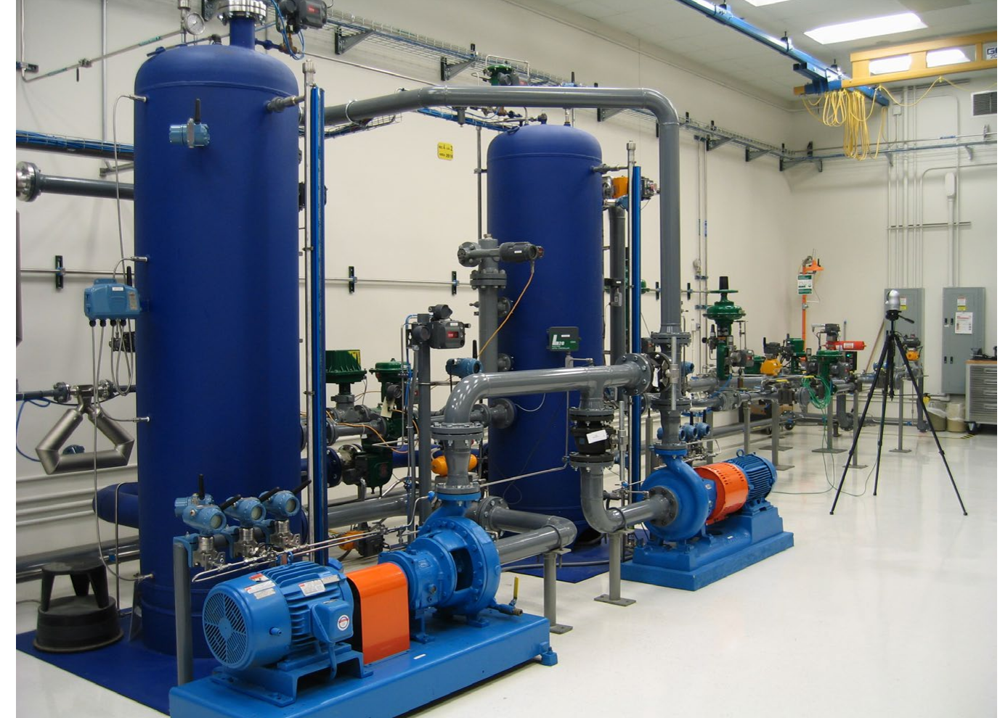

The Performance Test Loop

1 2 3 4- 1Piping loop — circulates process fluid past the valve under test
- 2Motor-driven pump — drives flow through the loop
- 3Valve assembly under test — mounted in the line, instrumented
- 4Instrumentation — reads flow and valve position throughout the test
After Control Valve Handbook, 6th ed., Fig. 2.2 — used directly, numbered markers placed by direct visual inspection (no native printed labels on the photo). Component Index: cvh-cmp-performance-test-loop-photo.